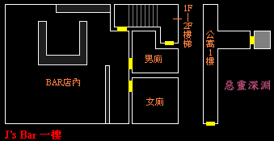
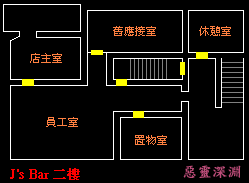
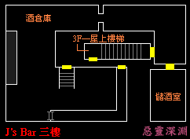
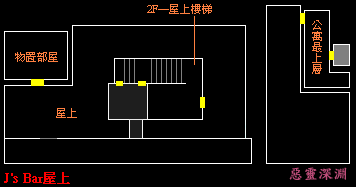
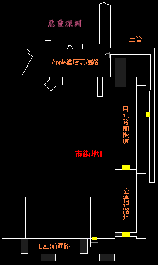
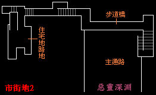
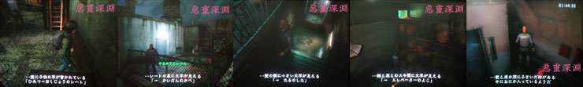

|
惡靈古堡Outbreak----地圖攻略∼發生Easy/Normal
|
此頁面含有日文編碼文字
|
本篇攻略的道具配置以"Normal"為主 ，有時會因為選擇的角色和機率不同而有些許改變；'關於SpecialItems和達成率的詳細介紹，請參
 BAR店內 / 男廁 / 女廁 / 1F─2F樓梯 在所有人物中，只有Yoko一開始的位置在女廁。若將兩個酒桶擋住門可以延緩僵屍闖入的時間，另外有沒有帶Bob離開會引響後面的 達成率，拿到武器後，別忘了分配給其他夥伴。通往1F─2F樓梯的門除了用鑰匙打開外，使用暴力破壞也可以，Alyssa則能使用隨身 道具萬能鑰匙，按圈連打就可打開。 往二樓樓梯的窗戶要小心被僵屍抓住，若被抓住沒人幫忙是很危險的。 BAR店內：吧台桌上有手槍、員工室鑰匙，後方流理台有包丁、吧台內側有急救噴霧 、殺蟲劑，廁所前走道有綠色藥草、 Playing Menu•操作篇。 男廁：手槍、綠色藥草。 女廁：掃把。 1F─2F樓梯：Playing Menu•知識篇、綠色藥草。 達成率：推兩個酒桶擋住門、Will僵屍化、員工室鑰匙使用 SpecialItems：S.T.A.R.S.面試心得、黃色的傘、賒帳的帳單、豆子湯的製作法、Will的祕藏食譜、裁斷用的剪刀、眼鏡、吃角子老虎的紀 念幣、有男性汗臭味的手帕。
 員工室 / 休憩室 / 置物室 / 舊應接室 / 店主室 為了阻擋僵屍前進，在辦公桌上找到釘打機後到員工室入口放有幾塊木板的地方使用，在這之前可以先前往休憩室；另外，用釘打 機 時，小心別把同伴封閉在外面了。若Bob也跟著，當使用完釘打機，並確定所有人都在裡面，就會啟動Bob情況惡化的動畫。 置物室中有一個櫃子除了Cindy之外其他人都無法打開，因為這是Cindy的置物櫃嘛。 舊應接室的櫃子可用Alyssa的萬能鑰匙打開。 往三樓的門同樣能使用鑰匙、暴力、萬能鑰匙三種方式打開。 員工室：釘打機、新聞紙、青色的鑰匙（新聞紙下方）、紅色藥草。 休憩室：爬到床下面會發現鐵棒，垃圾桶裡有地圖，旁邊櫃上有手槍彈。 置物室：藍色藥草、手槍彈、綠色藥草x2（Cindy的櫃子）、抗virus劑、木棒、BAR從業員日記。 店主室：藍色藥草、綠色藥草、手槍彈。牆上的機關放入酒樽即可解開，並從打開的抽屜拿到散彈槍、Jack的Memo。酒樽在三樓。 舊應接室：打火機、手槍彈、新聞紙、鐵棒、45AUTO彈、手槍（鎖住的櫃子）。 達成率：使用釘打機封閉出入口、店主室聽到慘叫聲（隨機）、舊應接室烏鴉飛入（Normal以上模式）、打開舊應接室櫃子的鎖 （Alyssa）、取得BAR從業員日記、Bob狀態惡化、使用青色的鑰匙、解開店主室的壁畫機關、取得Jack的Memo、取得新聞 紙。 SpecialItems：三人的照片 、藥草栽培的教本、射靶的對戰表、Will的日記、理想的父親、勝負的硬幣、白色的背心、體操服、可愛的 吊飾、腦的覺醒、皮褲。
 3F─屋上樓梯 / 酒倉庫 / 儲酒室 如果在二樓有拿打火機，就能在酒倉庫爬梯前方牆上觀看一段字句「秘密→屋上的座席」。 使用起重機鑰匙打開起重機後再把貨物搬起，爬上梯子從貨櫃上離開；另外破壞鐵捲門也能離開，但是鐵捲門耐性大，不是這麼容 易 打開。 儲酒室：單人遊戲的建議、酒樽、起重機鑰匙、散彈、急救噴霧。 酒倉庫：酒樽x2、綠色藥草、鐵棒、藍色藥草。 達成率：使用起重機鑰匙並移動貨物、破壞鐵捲門、儲酒室有酒樽落下（隨機）。 SpecialItems：隱密的場所Memo、Jack的手記、Mark的酒瓶。
 2F─屋上樓梯 / 屋上 / 物置部屋 / 公寓最上層 成功把Bob帶到這裡的話，Bob會在這裡死去。往物置部屋的門前，就是打火機文字提示的「屋上的座席」，使用打火機看到另一段文 字「樓梯的牆壁」，指的是2F─屋上樓梯的牆壁，往回去觀看，又看到一段「酒樽的下面」，這次的位置在酒倉庫起重機後面，又一 段文字「電梯的側面」。看完後回到屋上。 破壞物置部屋正前方的鐵絲網，時間開始倒數三分鐘，趕緊和大家跳到公寓屋頂上去吧。 公寓最上層的電梯旁邊就是打火機文字的終點了，把所有文字都看完的話，使用打火機就可以拿到矛。 2F─屋上樓梯：物置的鑰匙。 屋上：綠色藥草、手槍（死去的Bob身上）、新聞紙、手槍彈（公寓屋頂）。 物置部屋：急救噴霧、手槍的彈匣。 公寓最上層：紅色藥草、棒子（解謎）。 達成率：破壞鐵絲網、用打火機觀看所有字句、Bob屋上自殺。 SpecialItems：西部牛仔靴、合成材質的束腹。
公寓一樓 直接離開，待著不走的話，會有僵屍闖進來喔。 公寓一樓：綠色藥草、手槍彈。 SpecialItems：廉價的手錶。
 BAR前通路 / 公寓裡路地 / 用水路前板道 / 土管 / Apple酒店前通路 BAR前通路推動兩台牆邊的警車來減緩僵屍前進的速度，一定時間後NPC就會帶大家離開，公寓裡路地亦同。 在用水路前板道，必須打開底部油罐車的開關，然後使用打火機，並在爆炸之前跳入水中，跟大家一起跳吧。 BAR前通路：靠近門邊的警車上有地圖。 公寓裡路地：鐵棒、手槍彈、急救噴霧、散彈。 用水路前板道：倒地警官附近有打火機、散彈槍，如果早有打火機在身上就不能再拿了。 土管：藍、紅、綠x2藥草。 Apple酒店前通路：綠色藥草、Raccoon Today 達成率：推動兩台警車、讓油罐車的油流出、燃燒流出的油、油罐車爆炸死亡、所有地圖入手、取得Raccoon Today、在BAR前通路聽 到悲鳴（隨機）。 SpecialItems：耐用的安全靴、小艇的型錄、茶色的腰帶、R.P.D.的帽子。
 住宅地路地 / 步道橋 / 主通路 這裡關係到結局的兩個分歧，在步道橋看過三位警察遇襲的動畫後，往回跑到住宅地路地和警官講話，就可以搭車離開，但是若是 活 著的夥伴沒有跟著回來，即無法搭車；若繼續前進到主通路，則要蒐集散落的兩樣道具並組合，在中央警官屍體處使用。 住宅地路地：紅色藥草、散彈槍、手槍彈、散彈x2、急救噴霧x2、藍色藥草、麥林手槍。 主通路：起爆開關、起爆把手。 達成率：起爆裝置啟動、和大量僵屍戰鬥、迴避大量僵屍。 SpecialItems：皮製的手帳、獅子的環、生命保險的文案。 疑難解答
2F舊應接室櫃子：Ｓ型（Easy）、Ｈ型（Normal）； 往2F─3F樓梯：Ｐ型； 屋上物置部屋：Ｉ型。 （使用其他種類一樣可以打開，只是快慢的差別）
屋上──「→ かいだんのかべ」（→樓梯的牆壁） 2F─3F樓梯──「→ たるのした」（→酒樽的下面） 三樓酒倉庫──「→ エレべーターのよこ」（→電梯的側面） 公寓最上層──取得道具

。放心，就算夥伴在油上亂跑也不會傷害到他們。 未經許可禁止轉載連結 |
||||||||||||||||||||||||||||||
惡靈深淵Biohazard Abyss http://98.to/coolbio